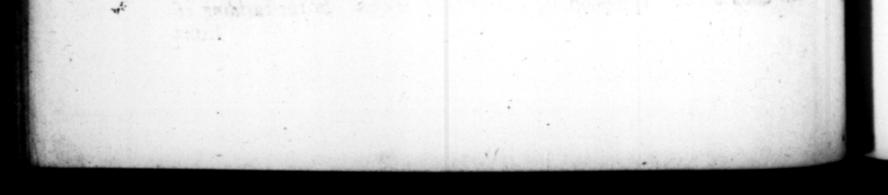

192 In . pretoriorum atque villarum omni ratione poſthabica, nihil tam efficere concupiſcebat, quam od poſle effici negaretur. . t jactæ itaque moles infeſto ac profindo mari, exciſæ rupes duriſſimi ſilicis, & cam i montibus aggere æquati, complanata foſſuris montium juga, ncredibili quidem celerĩtate, cum more culpa capite lueretur. Ac ne ſin gula enumerem, immenſas o„ totumque illud Tiberii Celaris vicies ac ſepties millies HS. non toto vertente anno abſumpſit. 38. Exhauſtus igitur aq; egens, ad rapinas convertit animum, vario & exquiſitiſſimo calumniarum & auctionum & vectigalium genere. Negabat jure civitatem Romanam uſurpare eos quorum majores ſibi poſteriſque cam impetraſſent, niſi fllii eſſent. Neque enim intelligi debere Pofferos ultra hunc gradum. prolataque Divorum Julii & Auguiti diplomata ut vetera obſoleta deflehat, Argnebat & perperam ceditos cenſus, quibus poſtea quacumque de cauſa quidquam incrementi acceſſiſſet. Teſramerta primipilarium, qui ab initio principatus Tiberii, neque illum, neque ſe heredem reliquiſſent, ut ingrata reſcidit, Item cæterorum, ut irrita & vana, quoſcumque quis diceret herede Cælare mori deſtinaſſe. Quo metn injecto, cum jam & ab ignotis inter familiares, & à parentibus inter liberos palam heres nurcuparetur, deriſores vocabat : quod poſt nuncupationem vivere perſeverarent, & multis venenatas matteas miſit. Cognoſcebat autem de talibus caulis, taxato prius c sUET. | ance to all ſenſe and reaſon, he maſs 0 __ Tall by digging, and 19, wnleſs tl ſay, that they with their chi TRANG 1% his palaces and country-ſeats, in def ed to effct® nothing ſo much, ar — was ſaid to be impoſſible. Ac cordingly mole were firmed in 8 ay and turbulent ſea, rocks of the hard one away, and plains raiſed the heirht of mountains with 4 va earth, and the tops of —_ wi emncredible ſpeed to, for all remifſneſs was ſure 4 be capital. And, not t» reckon up particulars, he laviſt'd sway 4 moſt 3 eſtate, and all the treaſure that had been amaſſed together by Tiberius Ceſar, amounting to two thouſand ſeven hundred millions of ſeſterces, within leſs than a years time. | 38. Being therefore quite exhay and in want of money, be fell to dering his ſubjects, by all the ways and means of falſe accuſation, confiſcation and taxes, that could be invented, He decla red thoſe had no right to the dom of Rome, whoſe anceſtors had ob. tained it fer themſelves and their poſteriwere ſons, for that none ee ought to be reckoned under that 48 poſterity, And when the grants of ulius and Auguſtus produced — thoſe e, be put on 4 ſhew of concern, but ſaid they were old and out of date. He charged too all thoſe with giving in a falſe account of th yo, who after the raking of the cenus, had by any means whatever in. proved them, He made void the wills of all theſe thas ad been 2 the firſt rank in the army, 4s teſtimon of f baſe ingratitude, if from the heLinning of Tiberius reign, the) had not made either that prince or himſelf their heir. he like he did too by the wills of all others, if any one did but pretend to Fond at their death to leave Ceſar their heir. The publick being terrified at this proceeding, he ” now, iy perſons unknown to him, jeu heir with pn merges and by parents ren. And theſe he Jaid bantered him, in pretending to live any longer after ſuch an appointment 3 — ent many of them poiſone mo
